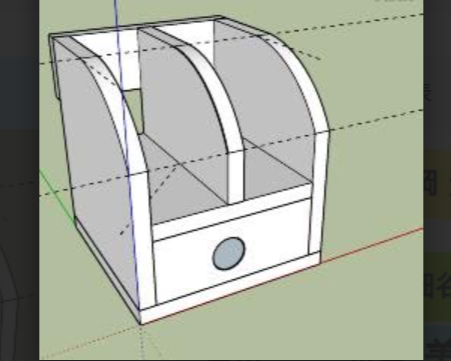
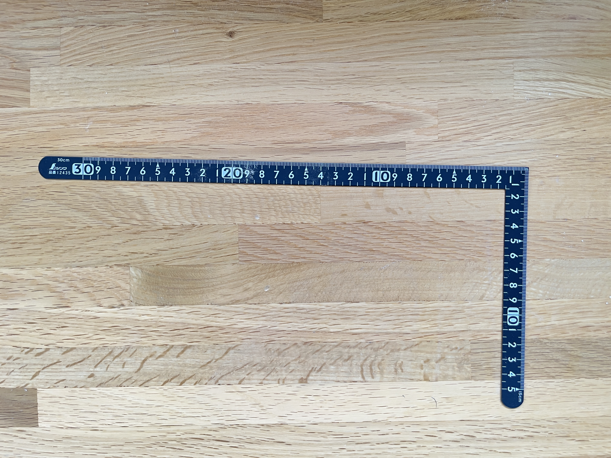
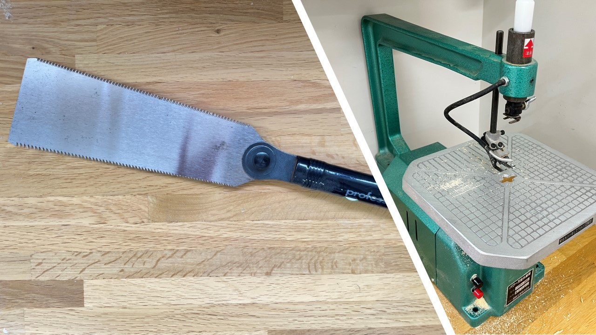
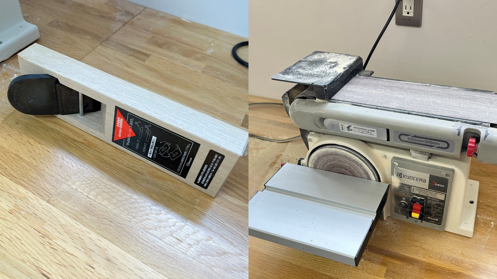
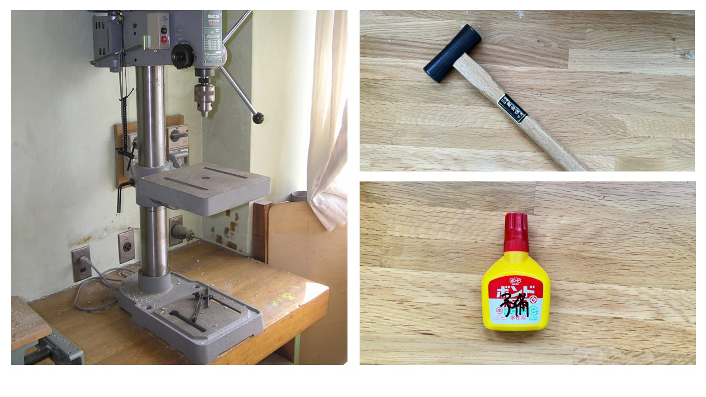
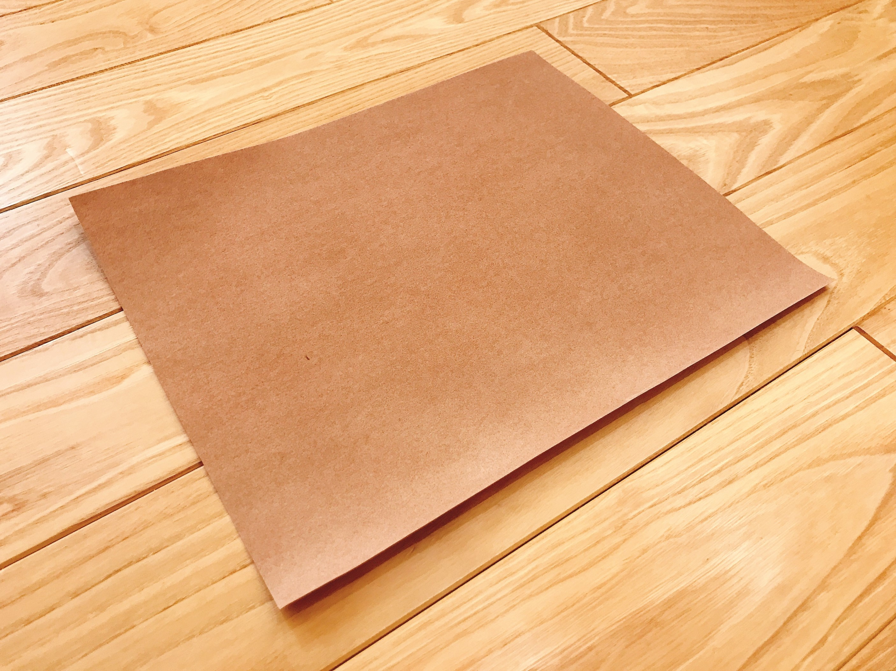
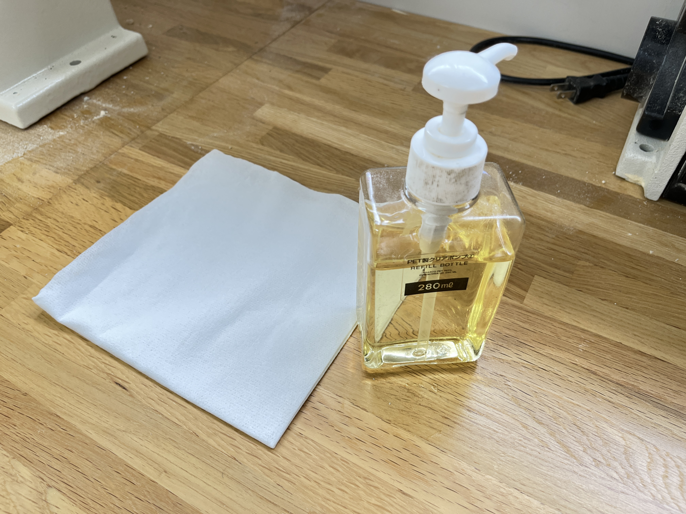

| 作業工程 |
イメージと解説動画 |
CADはgoogle scketchupというソフトを使用します。
作業を効率よく進めるためには、ショートカットキーを使う必要があります。
①基本形の作成
②応用の作成（自分の作品）
この順番で設計を進めてください。 |
 |
けがきはさしがねと鉛筆を使用します。
＜ポイント＞
①妻手の内側を木材に密着させること
②長手の半分が浮いた状態で鉛筆を添えて線を引くこと。
③木口(こぐち)と木端(こば)のけがきはさしがねの直角を利用すること。
仕上がり寸法線と切断線の違いを理解してけがきを行いましょう。
|
 |
切断は両刃のこぎりと糸のこ盤を使用します。
＜両刃のこぎりのポイント＞
①縦引きと横引きの違いを理解すること。
②柄の先端近くを軽く握る(握力10くらい！)こと。
③切断線の延長線上に立ち、刃がぶれないようにまっすぐ引くこと。
仕上がり寸法線を切らないように注意！
糸のこ盤は、曲線を切断するために使用します。
＜糸のこ盤のポイント＞
①木材をゆっくりと操作すること。
②切り終えたら、毎回電源を切ること。
けがに気を付けて使用しましょう！
|
 |
切削はかんなとベルトサンダーを使用します。
仕上がり寸法線までの余分な数mmを少しずつ削って合わせていきます。
木材を削る大きさに合わせて、かんなとベルトサンダーを使い分けてください。
＜かんなのポイント＞
①木材が水平になるように万力に挟みます。
②利き手でない手の持ち方に注意しましょう。
③上部から下部まで一気に引き抜きます。
＜ベルトサンダーのポイント＞
①仕上がり寸法線まで削ります。
②少しずつ力を加えて、削りすぎないようにしましょう。
|
 |
組立てには卓上ボール盤と接着剤とげんのうを使用します。
卓上ボール盤でくぎを打つポイントに穴をあけます。
強度を高めるために、くぎ打ちをする前に接着剤で木材を接合します。
接着剤で接合してしまうと組立てができなくなってしまう場合は接着剤で止めないように注意してください。
＜卓上ボール盤のポイント＞
①ジャージを着ている人は腕をまくりましょう。
②右手でレバーを手前に回し、左手は板を上から押さえます。
③レバーを回し、穴を貫通させます。
④レバーをゆっくり戻します。
＜接着剤のポイント＞
①薄く、広く付けます。
②接着剤を付けた後は、１分程度押さえておきます。
＜げんのうのポイント＞
①平たい面と曲面を使い分けましょう。
②くぎを打つときは真上から見て、立って行いましょう。
③柄の先端部分を持ち、手首を柔らかくしてくぎを打ちます。
|
 |
研磨には紙やすりを使用します。
＜紙やすりのポイント＞
①紙やすりを半分に折ります。
②角を削るときは、斜めや円型にこするとよく削れます。
③表面を削るときは、繊維方向に沿ってこすります。
|
 |
塗装にはニスを使用します。
戸田東中学校で使用するニスはキヌカと呼ばれるニスを使用します。
キヌカはお米100％でできているので、化学的なにおいの発生がなく
舐めても人体に悪影響がありません。
＜キヌカのポイント＞
①ウエスもしくは、ハケを使用します。
②つけすぎると表面がべたべたするので、薄くのばします。
|
 |
 この分野では身の回りにある形あるもの・製品について学習を深めていきます。
この分野では身の回りにある形あるもの・製品について学習を深めていきます。